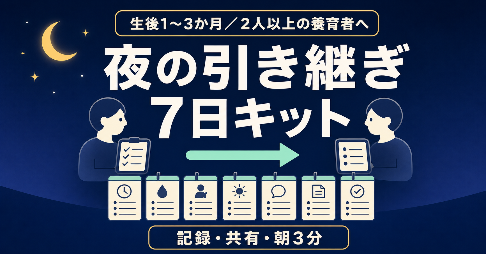
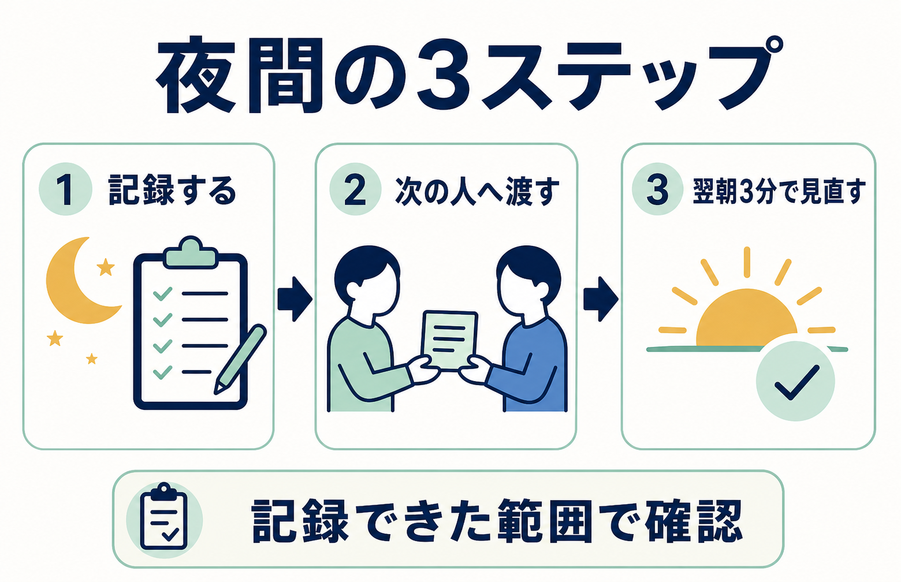

【生後1〜3か月】授乳・おむつ「前回は何時？」を確認しやすくする
2人で回す夜間育児の記録・引き継ぎ7日キット
夜中に赤ちゃんへ対応したはずなのに、朝になると時刻や回数があいまいになる。
2人で交代していると、「最後はどっち？」「次は何を確認する？」も分かりにくい。
この記事は、赤ちゃんを必ず寝かせたり、夜泣き・授乳の回数を減らしたりする方法ではありません。目指すのは、次の状態です。
夜間に「誰が・いつ・何をしたか」を残し、記録できた範囲で、次の担当者が前回の対応と確認事項を見つけやすくすること。
無料部分に一晩版、有料部分に7日版をまとめました。
先にお伝えしたいこと
この記事が合いそうな方
- 生後1〜3か月ごろで、2人以上の養育者が何らかの夜間・朝の引き継ぎをしている
- 2人とも育休中である必要はない。片方が就労中でも、就寝前・早朝・休日に記録や対応を引き継いでいる
- 朝になると、ミルク・おむつなどの対応時刻や担当があいまいになる
- 共有アプリやメモはあるが、「次の人への一言」が抜けやすい
- 完璧な育児記録より、夜間の入力項目を最小限に抑えたい
- まず一週間だけ試し、自分たちに必要か判断したい
この記事が合わない方
- 赤ちゃんが必ず寝る方法、夜泣きを止める方法を探している
- 授乳の間隔・量・方法、夜間断乳の可否など、医療・栄養上の判断を求めている
- 病気や発達、睡眠障害の診断を求めている
- 記録を取ること自体が、現在の心身に大きな負担となっている
- 赤ちゃんに緊急性のある症状が見られる
本記事は、家庭内の記録と引き継ぎを整えるための一般的なテンプレートです。授乳や睡眠について医師・助産師・保健師等から個別の指示を受けている場合は、その指示を優先してください。
【本人経験】なぜ、この形を作ったのか
生後1か月から3か月までの約3か月、わが家では夜中のミルクやおむつ対応を記録する「夜間対応メモ」を使いました。
きっかけは、朝になると「昨日の夜は何時にミルクをあげたっけ？」と思い出せないことが多々あったからです。夫婦交代では、相手の対応時刻も分からなくなりました。
そこで、スマホのホーム画面にショートカットを置き、起きたらボタンをタップして「ミルク」「おむつ」などを選ぶ形にしました。記録が残ることで、朝に「2時と5時に起きた」と確認しやすくなり、お互いの対応履歴も見えるようになりました。
一方で、微妙だった点もあります。
寝ぼけた状態では、スマホを開くこと自体が面倒でした。ボタンを押すだけでも、記録を忘れる夜がありました。
現在はスマートスピーカーの音声記録へ移行しています。この経験から、次の3点を先に決める形にしました。
- 最低限、何を残すか
- 次の担当者へ、何を渡すか
- 入力できなかったとき、どう補うか
以下は、この本人経験を土台にした編集設計です。7日運用の手順や判定基準は本人の実績値ではありません。
【企画根拠】集計データから見えた、困りごとの重なり
Mamariの0〜4か月に関する8,755件を、本文を引用・言い換えせず、テーマ別に集計しました。
- 夜間対応に関するもの：1,456件（16.63%）
- 授乳に関するもの：2,857件（32.63%）
- 夫婦・分担に関するもの：2,752件（31.43%）
- 夜間対応と夫婦・分担が重なるもの：552件（6.30%）
- 夜間対応、夫婦・分担、授乳の3テーマが重なるもの：301件（3.44%）
ここから言えるのは、3テーマが重なる相談が一定数あることまでです。同じ割合の購入希望者がいるという意味ではなく、購入意向や購入率も示しません。
この件数は内部の語句・ルール分類による探索値です。相談内容の重要度を人が一件ずつ評価した結果でも、Mamari全利用者や育児家庭全体の人気順位でもありません。月齢タグの重複、収集上限、相談を投稿する人の自己選択もあります。
内部参照用に検索結果から人手で選んだ、2026年5月4日〜8月20日公開の有料note100件では、公開価格の中央値は300円、中央50%は200〜500円でした。無作為標本ではないため、note市場全体の相場とはみなしません。この標本内で、睡眠中心17件は中央値500円、テンプレート中心4件は中央値730円でした。ただし後者はn=4で、真の販売数もほぼ不明です。「夜間対応＋記録・テンプレート＋夫婦」を中心訴求する商品は0件でした。
0件は、未開拓と需要未実証の両方を意味します。
この未公開稿では、検証開始価格を500円に設定します。内部標本の中央50%の上限であり、睡眠中心17件の中央値でもありますが、真の販売数や本商品の支払意思は分かりません。付録4点と7日間の運用設計に500円の価値がある、という未検証の仮説を確かめるための開始価格です。
翌朝レビューは3分を7日間、合計21分の設計ですが、時間を価格へ換算して500円としたわけではありません。3分は利用負荷を抑えるための設計、500円は付録4点と運用設計に対する価格仮説として分けて扱います。
ここでいう適格PVは、主対象に合い、購入条件まで確認できた閲覧として、計測前に定義します。780円は、500円で1,000適格PVを計測し、20購入以上、CVR 2%以上、返金申請率5%以下、10件以上の利用回答でファイルを開けた割合90%以上・満足80%以上、安全問題0件、5家庭での使用性確認をすべて満たした場合に限り、次の独立したコホートで試す候補です。条件を満たしても適正価格の確定とはせず、値上げ後の結果を別に確認します。
300円は、500円で1,000適格PV後も購入5件未満で、10件以上集めた非購入理由の30%以上が価格を主因に挙げた場合だけ、別コホートの候補にします。「安いほど売れる」と仮定して先に下げることはしません。

このキットで繰り返すのは、上の3ステップだけです。記録できなかった部分を推測で埋めず、翌朝は育児の正解ではなく「引き継ぎの運用」を見直します。
今夜だけ試せる「一晩簡易版」
新しいアプリは入れず、紙・共有メモ・普段の育児記録アプリで、次の表だけを試してください。
| 時刻 | 担当 | 実際にしたこと | 数値・様子など必要な補足 | 次の担当者への一言 | 引き継ぎ済み |
|---|---|---|---|---|---|
| ミルク／おむつ／その他 | □ | ||||
| ミルク／おむつ／その他 | □ | ||||
| ミルク／おむつ／その他 | □ |
書き方のルールは3つだけです。
- 記録より安全を優先する。 落ち着いてから書く。書けない回があっても責めない。
- 事実だけを書く。 「たぶん」「いつも通り」で済ませず、不明なら「不明」と残す。
- 最後に一言だけ渡す。 「次回は家庭で決めた指示を確認」「気になる様子あり」など、次の人が最初に見る情報を書く。
朝になったら、引き継ぎに関わる人同士で次の3問だけ確認します。
- 記録がなくて迷った場面はあった？
- 多すぎて書けなかった項目はあった？
- 今夜、ひとつだけ変えるなら何？
この一晩版で十分なら、有料部分は不要です。家庭別の交代設計と7日間の見直しが必要な場合だけ、続きを検討してください。
必ず無料で読んでほしい安全情報
このテンプレートは、安全確認や医療判断の代わりにはなりません。記録のために赤ちゃんから目を離したり、安全でない場所へ置いたりしないでください。スマホ、紙、筆記具も寝床には置きません。
こども家庭庁は、1歳になるまでは医学上の理由がない限り、寝かせるときはあおむけにすることを案内しています。寝具は身体が沈まない硬めで平坦なものを使い、寝床にはぬいぐるみ、タオル、クッションなどを置かず、すっきりさせます。掛け布団が顔にかかる危険を避け、衣類や空調で調整します。ベビーベッド等は安全基準を満たす製品を説明書どおりに使用します。
大人の身体や寝具で赤ちゃんの口・鼻を塞ぐ危険があるため、赤ちゃん専用の寝床を用意することも案内されています。飲酒後、眠気や注意力低下を起こす薬を服用した人との添い寝、早産・低出生体重で生まれた赤ちゃんとの添い寝は、特に危険とされています。乳児の周囲では喫煙を避けます。
安全な睡眠については、公開時点の公的情報を必ず確認してください。
判断に迷うときは #8000
休日・夜間に、子どもの症状への対処や受診の要否で迷ったときは、全国統一の子ども医療電話相談 #8000があります。地域の相談窓口へつながり、小児科医師・看護師から助言を受けられます。実施時間は都道府県により異なるため、居住地の情報も事前に確認してください。
緊急時は記録せず119
消防庁は、次のような状態では、ためらわず119番へ連絡するよう案内しています。
- 意識がない、返事がない、もうろうとしている
- 呼吸が弱い、呼吸が苦しそうで顔色が悪い、くちびるが紫色
- けいれんが止まらない、または止まっても意識が戻らない
- 生後3か月未満で、いつもと違い様子がおかしい
このほかにも、緊急だと感じたときは記録や家庭内の相談を先にせず、119番へ連絡してください。
有料部分に含まれるもの
- 7日運用シート
- 毎回の夜間対応ログ
- 3つの家庭条件別・交代設計
- 引き継ぎの会話スクリプト
- 架空の記入例
- 翌朝3分レビュー
- 継続／変更／中止の判定表
- 紙／既存アプリ／音声入力の使い分け
- 共有・プライバシー確認チェック
- コピーして使える付録4点
検証開始価格：500円
付録版：0.1-draft／最終更新日：2026-08-23／現在の状態：未公開・購入不可
付録ファイルは次の4点です。
01-seven-day-night-log.csv（2,431バイト）— Day 1〜7、各日4行の夜間記録表02-seven-day-review.csv（612バイト）— 翌朝3分レビューと7日目の判断表03-handoff-card.md（756バイト）— 交代前に読む短いカード04-setup-privacy-checklist.md（1,486バイト）— 入力手段、共有範囲、失敗時の代替
| 付録 | 購入前に確認できる主な項目 |
|---|---|
| 7日夜間ログ | 日、日付、時刻、記録者、実際の対応、必要な補足、次に確認すること、引き継ぎ済み |
| 7日レビュー | 最終対応を確認できたか、分からない箇所、入力の負担、今夜変える1点、継続／変更／中止 |
| 引き継ぎカード | 最後の記録、担当、対応、次に確認すること、共有事項、確認者 |
| セットアップ | 入力手段、最小項目、共有権限、通知、個人情報、記録できなかった時のルール |
購入前に確認する利用条件
- 必要環境：CSV 2点はUTF-8 CSVを開ける表計算アプリ、Markdown 2点はUTF-8テキストを開けるメモ／テキスト編集アプリを使います。特定の有料アプリは不要です。
- スマートフォン：CSVは表計算アプリへ読み込み、原本を複製してから入力します。Markdownは普段の共有メモへ必要部分をコピーします。アプリごとの表示・共有仕様は各提供元に依存します。
- 紙：各アプリの印刷機能を使うか、必要な項目だけ紙へ書き写します。専用のA4 PDFは含まれません。
- 更新方針：将来公開する場合、ファイル不備、重大な誤記、公的安全情報へのリンク切れは確認後に修正し、記事末尾へ更新日と変更点を残します。機能追加や無期限更新は約束しません。
- 返金方針案：この原稿は未公開のため、note上の返金設定はまだありません。将来公開する場合は「返金申請を受け付ける」を推奨案とし、実設定と購入前表示が一致するまで販売しません。申請可能期間や審査はnote公式の返金ルールに従います。
- 問い合わせ範囲：将来公開する場合、ファイル不備と記事の誤記はnote上のクリエイター問い合わせ導線で受け付ける案です。個別の授乳・睡眠・受診相談には回答しません。現在は未公開のため、販売用問い合わせURLはありません。
本商品に個別相談、診断、授乳量・間隔の指示、赤ちゃんの睡眠改善保証は含まれません。
700円で受け取る内容を確認する
7日運用の全手順、条件別の交代設計、会話例、架空の記入例、判定表と実ファイル4点です。
評価用のため、付録リンクはこの画面から直接開けます。このHTMLはアクセス制御されたpaywallではなく、公開販売面へは流用できません。 決済は発生しません。ローカルHTML内で表示を切り替えるだけです。最初に：4点の付録をコピーする
- 添付された4ファイルを端末へ保存します。
01-seven-day-night-log.csvと02-seven-day-review.csvを表計算アプリで開き、編集用コピーを作ります。03-handoff-card.mdと04-setup-privacy-checklist.mdは、UTF-8テキストとして開き、普段使う共有メモへ必要部分をコピーします。- 今夜は、セットアップ確認とDay 1だけを使います。7日分を先に埋めません。
ファイルを開けない場合は、この有料部分に同じ項目を掲載しているため、本文から共有メモや紙へコピーできます。表示崩れや文字化けがあれば、使用を始める前に購入先の案内から連絡してください。
【編集設計】7日運用の全体像
この7日間の目的は、赤ちゃんの睡眠を変えることではありません。家庭内の記録と引き継ぎを、負担なく続く最小サイズまで削ることです。
| 日 | 試すこと | 翌朝に見ること |
|---|---|---|
| Day 1 | 変えずに現状を記録 | どこで迷ったか |
| Day 2 | 必須項目を3〜5個に絞る | 書かなかった項目は何か |
| Day 3 | 担当する時間帯・役割を決める | 担当が曖昧だった場面 |
| Day 4 | 引き継ぎ文を一文に統一 | 追加質問が必要だったか |
| Day 5 | 入力手順を一つ減らす | 入力忘れが減ったか |
| Day 6 | 入力できない時の予備手段を試す | 記録できたか／できなければ「不明」としたか |
| Day 7 | 一週間を振り返る | 継続・変更・中止を決める |
毎晩の開始前シート
Day：
日付：
今夜の前半担当：
今夜の後半担当：
交代の目安：家庭で決めた時刻／合図／状況
医師・助産師等から受けている個別指示：あり／なし
※ありの場合は、内容を自己判断で変更せず確認できる場所を共有
今夜、必ず残す項目（3〜5個）：
1.
2.
3.
4.
5.
入力方法：紙／既存アプリ／共有メモ／音声
入力できない時の予備手段：
最初に確認する共有・プライバシー
- 閲覧・編集できる人を確認する
- 夜間の負担にならない通知設定にする
- 不要な氏名、住所、医療情報を入れない
- 音声入力では、誤認識、保存先、共有範囲を確認する
- 記録できない回は推測で埋めず「記録なし」とする
詳しい確認欄は付録04-setup-privacy-checklist.mdにまとめています。
毎回の夜間対応ログ
時刻：
担当：
実際にしたこと：ミルク／おむつ／その他（ ）
必要な数値・補足：
赤ちゃんの様子：
次の担当者が最初に確認すること：
入力方法：紙／アプリ／音声／後から追記
引き継ぎ：済／未／相手を起こして確認
授乳方法、量、間隔、赤ちゃんを起こすかどうかは、このシートでは決めません。家庭が医療者等から受けた指示と、すでに決めている方針に沿って、「実際に行った事実」だけを記録します。
3つの運用条件別・交代設計案
以下は一次体験から作った編集上の運用案で、3種類の家庭すべてで効果を検証したものではありません。家庭の事情や医療者からの個別指示を優先してください。
条件A：すべての対応を交代できる家庭
前半／後半など、家庭で無理のない担当ブロックを決めます。対応ごとに相手を起こすのではなく、交代時にログと一文の引き継ぎを渡します。
記録するもの：担当、時刻、実際にしたこと、必要な補足、次の確認事項。
条件B：授乳担当は固定し、周辺の役割を分ける家庭
授乳方法の事情などから、授乳担当を簡単に交代できない家庭向けです。授乳そのものを無理に均等化せず、もう一人が担当できる準備、記録、片付け、その他の合意済みの役割を先に決めます。
記録するもの：授乳担当を呼ぶ必要があるか、授乳以外で完了した役割、次に必要な準備、固定担当が休める時間帯。
条件C：勤務などで参加できる時間が限られる家庭
一晩を完全に半分にするのではなく、「就寝前の一定時間」「早朝」「休日」など、参加可能な範囲を固定します。毎晩その場で決め直さず、変更がある日は開始前シートだけ直します。
記録するもの：参加可能な時間、時間外の連絡条件、朝に引き継ぐ事項、その日に変更した理由。
どの条件でも、形式的な50対50を目標にしません。目標は、担当と次の行動が見えることです。体調や勤務が変わった日は、その日の条件を変更して構いません。
引き継ぎの会話スクリプト
以下は言い方を短くするためのテンプレートで、本人やMamari利用者の実際の発言記録ではありません。
交代するとき
「前半は私が担当。最後の対応は○時、したことは○○。次に最初に見てほしいのは○○。詳しくはログに残したよ」
記録できなかったとき
「○時ごろに対応したけれど、正確な時刻は不明。分かる範囲だけ記録した。推測では埋めていないよ」
一人では続けにくいとき
「今夜はこのまま続けるのが難しい。次の対応から交代できる？ できない場合は、朝の役割を相談したい」
相手のやり方を責めそうなとき
「正解探しではなく、次に迷わないために事実だけ確認したい。何時に、誰が、何をしたかから見よう」
朝に変更を提案するとき
「昨夜、○○で一度迷った。今夜は項目を一つ減らす／引き継ぎ文を変える、どちらを試す？」
架空の使い方例
以下は形式を示すための架空例です。時刻や対応内容は、授乳や睡眠の推奨ではありません。
1:40
担当：保護者A
実際にしたこと：家庭で決めた夜間対応、おむつ
補足：必要事項を既存アプリへ入力
次の担当者へ：次回は家庭で共有している個別指示を確認
引き継ぎ：済
4:25
担当：保護者B
実際にしたこと：家庭で決めた夜間対応
補足：音声入力したが一部聞き取り不明
次の担当者へ：朝、時刻だけアプリと照合したい
引き継ぎ：済
この例で大切なのは、空欄を推測で埋めていないことです。「不明」「後で照合」と書けば、次の人は確定情報と未確認情報を区別できます。
翌朝3分レビュー
タイマーを3分に設定し、反省会ではなく運用確認として行います。
1分目：事実
- 対応回数と担当は追えるか
- 引き継ぎ漏れはあったか
- 「不明」のまま残った箇所はどこか
2分目：摩擦
- 入力まで何回操作したか
- 抱っこ中など、入力できない場面はあったか
- 相手を起こして質問した場面はあったか
3分目：今夜の変更は一つだけ
- 項目を一つ減らす
- 入力手段を、赤ちゃんの寝床から離れた安全な定位置へ変更する
- 引き継ぎ文を短くする
- 担当ブロックを変更する
- 入力手段を変える
複数を同時に変えると、何が負担を減らしたのか分かりにくくなります。一晩につき一つだけ試します。
紙・既存アプリ・音声の使い分け
紙
画面を開く操作がなく、誰でも同じ場所を見られます。一方、暗い場所での記入や筆記具の管理が負担になることがあります。紙とペンは赤ちゃんの寝床に置かず、安全に手を離せる状態で記録します。
既存の育児記録アプリ／共有メモ
普段から使う育児記録アプリや共有メモアプリへ項目を作ります。新しい仕組みを増やさず、養育者が同じ履歴を見られる点が利点です。ただし、入力項目を増やしすぎると、本人経験と同じく「スマホを開くのが面倒」という摩擦が起こります。
音声入力・スマートスピーカー
本人経験では、スマホのタップ記録からスマートスピーカーでの音声記録へ移行しました。手を使わずに残せる一方、聞き取り間違いや記録失敗は起こりえます。「記録したつもり」を防ぐため、翌朝に履歴を確認します。機器の共有範囲、保存先、プライバシー設定も事前に確認してください。
一つに統一する必要はありません。主手段を一つ、使えなかった時の予備手段を一つに絞ると、探す負担を抑えられます。
Day 7：継続・変更・中止を決める
以下は医学的な基準ではなく、この商品のための編集上の判定ルールです。
継続
- 次の担当者が、前の担当者を起こさず履歴を確認できた
- 記録項目が少なく、夜間でも無理なく残せた
- 2人が同じ情報を見て朝の確認ができた
変更して、もう3日だけ試す
- 入力忘れが複数回あった
- 項目が多すぎた
- 担当時間や交代条件が曖昧だった
- 紙、アプリ、音声のどれかが家庭に合わなかった
この場合は、最も大きな摩擦を一つだけ変更します。
中止
- 記録することが睡眠や安全確保をさらに妨げている
- 記録が養育者間の監視や責任追及に使われている
- 片方だけに入力負担が集中している
- 医療上の判断を、このテンプレートだけで行おうとしている
- 続けること自体がつらい
中止は失敗ではありません。一晩版、既存アプリの最低限の項目、口頭引き継ぎだけへ戻す選択もあります。
最後に
夜間対応の記録は、育児を採点するためのものではありません。
本人経験では、記録があることで、朝に対応時刻を思い出しやすくなり、夫婦がお互いの対応履歴を確認できました。同時に、スマホを開く一手間だけでも、寝ぼけた夜には記録漏れにつながりました。
だから、この7日プロトコルは「全部残す」ことを目指しません。
必要な事実だけを残す。分からないことは「不明」と書く。次の人へ一言渡し、合わなければやめる。
赤ちゃんの睡眠は保証できません。それでも、記録できた範囲で「前回は何をした？ 次に何を確認する？」を見つけやすくする形は試せます。
まずは無料部分の一晩版から、無理のない夜に試してみてください。
更新履歴
- 2026-08-23
0.1-draft：未公開初稿。7日夜間ログ、7日レビュー、引き継ぎカード、セットアップ確認を作成。